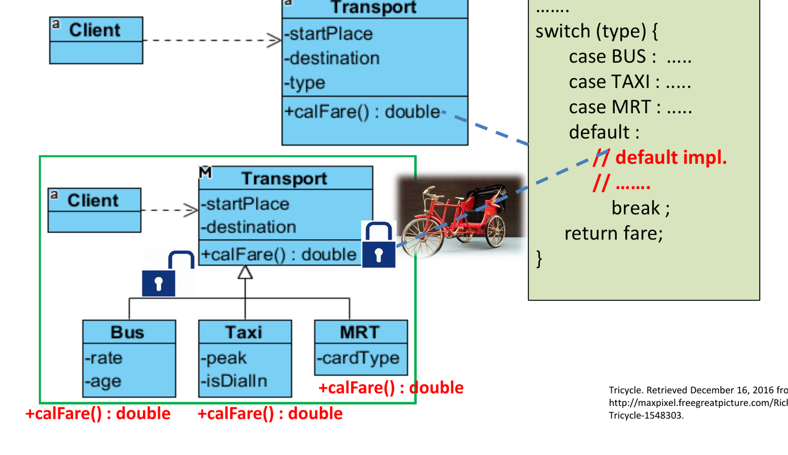
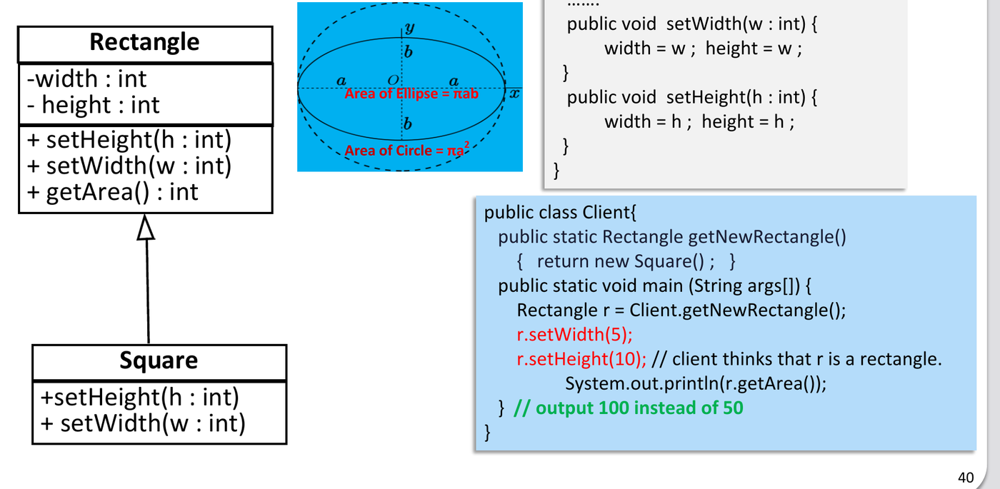
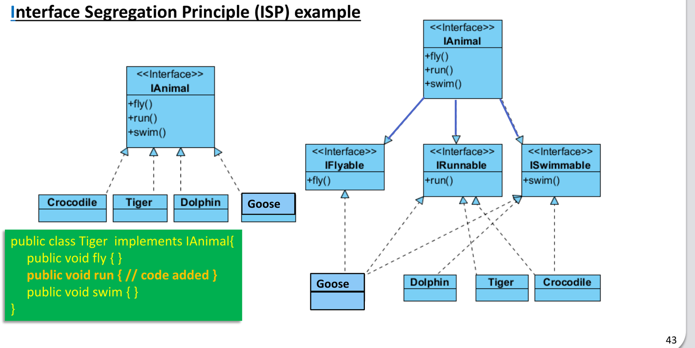
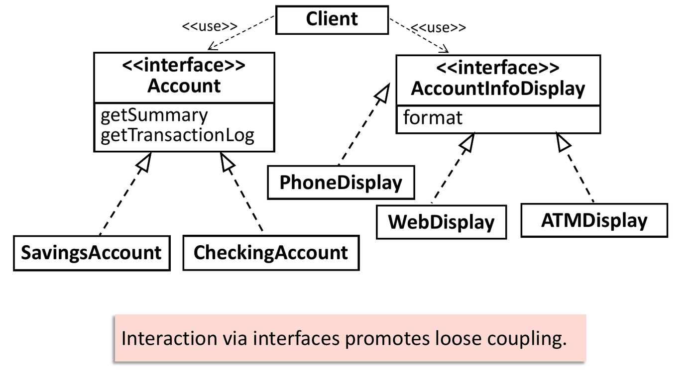
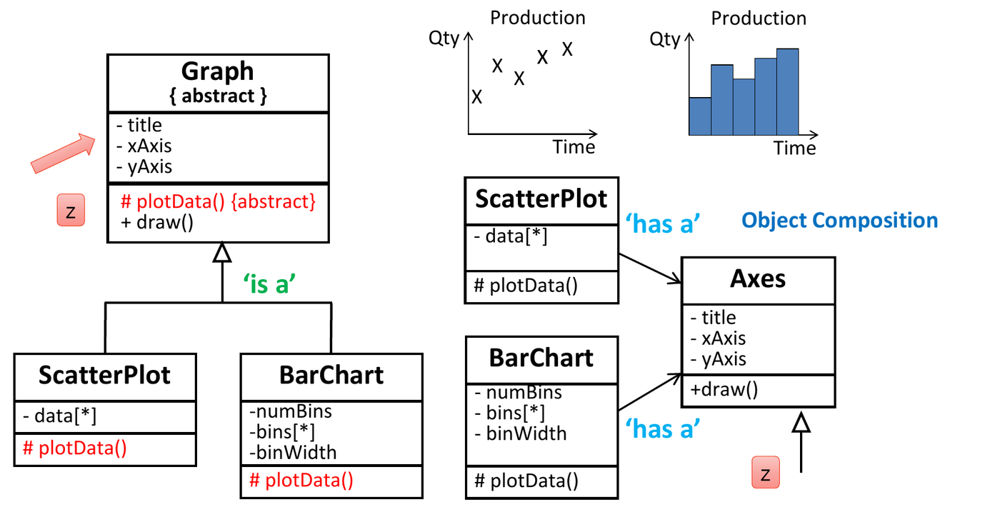

Writing functional code is straightforward; engineering software that remains maintainable, extensible, and resilient to changing business requirements is difficult. As codebases grow, poor designs degenerate into software rot characterized by rigidity (hard to change), fragility (changes break unrelated modules), and viscosity (doing things right is harder than doing hacks).
Object-oriented design principles provide architectural guidelines to prevent code rot by optimizing two foundational software attributes: Cohesion and Coupling.
1. High Cohesion and Low Coupling
Every architectural design decision balances the trade-off between cohesion and coupling:
Low Cohesion (Anti-Pattern) High Cohesion (Target)
┌───────────────────────────────────┐ ┌───────────────────────────────────┐
│ Account: deposit, withdraw, │ │ Account: deposit, withdraw, │
│ toXML, printPDF, sendSMS │ │ getBalance │
└───────────────────────────────────┘ └───────────────────────────────────┘
(Too many unrelated responsibilities) (Focused entirely on account state)| Metric | Definition | Engineering Target | Architectural Benefit |
|---|---|---|---|
| Cohesion | Degree to which all elements inside a single module, class, or method belong together and focus on one specific task. | High Cohesion | Classes are smaller, easier to understand, highly reusable, and isolated from unrelated changes. |
| Coupling | Degree of direct inter-dependence between different modules or classes. | Low Coupling | Modifications to one class do not ripple across or break collaborating classes. |
2. The SOLID Principles Framework
The SOLID acronym encapsulates five core object-oriented design principles formulated by Robert C. Martin:
| Acronym | Principle | Core Rule | Typical Smell / Violation |
|---|---|---|---|
| S | Single Responsibility Principle (SRP) | A class should have one, and only one, reason to change. | “God classes” mixing business calculations, database persistence, and UI formatting. |
| O | Open-Closed Principle (OCP) | Software entities should be open for extension, but closed for modification. | switch or cascading if-else blocks
checking type tags to add new algorithms. |
| L | Liskov Substitution Principle (LSP) | Subtypes must be substitutable for their base types without altering program correctness. | Subclasses throwing UnsupportedOperationException or
overriding methods with empty bodies. |
| I | Interface Segregation Principle (ISP) | Clients should not be forced to depend on interfaces they do not use. | “Fat” interfaces with 20+ methods forcing dummy empty implementations. |
| D | Dependency Inversion Principle (DIP) | Depend upon abstractions (interfaces), not concretions (concrete classes). | Instantiating concrete hardware or service classes directly with
new ConcreteService(). |
3. Single Responsibility Principle (SRP)
“A class should have only one reason to change.”
- A responsibility corresponds to an axis of change driven by a specific stakeholder group.
- If a class mixes domain business rules with presentation logic or persistence mechanisms, it possesses multiple responsibilities.
// VIOLATION: Class has 3 distinct reasons to change (business rules, formatting, persistence)
public class Account {
public void deposit(double amount) { /* ... */ }
public String toXML() { /* Changes if XML schema changes */ }
public void saveToDatabase() { /* Changes if SQL database changes */ }
}
// REFACTORED (SRP Compliant): Separated into distinct cohesive collaborators
public class Account {
public void deposit(double amount) { /* Business logic exclusively */ }
}
public class AccountXMLSerializer {
public String serialize(Account acc) { /* Serialization logic exclusively */ }
}
public class AccountRepository {
public void save(Account acc) { /* Database access exclusively */ }
}4. Open-Closed Principle (OCP)
“Open for extension, closed for modification.”
When requirements expand (e.g., adding a new payment method or shipping calculator), you should be able to introduce the new behavior by writing a new subclass or interface implementer, without modifying tested, existing source code.

// VIOLATION: Adding "PayNow" requires modifying the existing processPayment method
public class PaymentService {
public void processPayment(String method, double amount) {
if (method.equals("CreditCard")) { /* ... */ }
else if (method.equals("PayPal")) { /* ... */ }
else if (method.equals("PayNow")) { /* Modified existing class! */ }
}
}
// REFACTORED (OCP Compliant): Polymorphic abstraction
public interface PaymentMethod {
void pay(double amount);
}
public class CreditCardPayment implements PaymentMethod { public void pay(double amt) { /* ... */ } }
public class PayNowPayment implements PaymentMethod { public void pay(double amt) { /* New class added without modifying PaymentProcessor! */ } }
public class PaymentProcessor {
public void process(PaymentMethod method, double amount) {
method.pay(amount); // Closed for modification; open for any future PaymentMethod
}
}5. Liskov Substitution Principle (LSP)
“Let be a property provable about objects of type . Then should be true for objects of type where is a subtype of .”
A subclass must fulfill all behavioural invariants guaranteed by its
superclass. A caller holding a reference of type Superclass
must be able to use any Subclass without unexpected runtime
errors or corrupted assumptions.

The Classic
LSP Violation: Square extends Rectangle
Mathematically, a square is a rectangle. Structurally in code:
public class Rectangle {
protected int width, height;
public void setWidth(int w) { this.width = w; }
public void setHeight(int h) { this.height = h; }
public int getArea() { return width * height; }
}
public class Square extends Rectangle {
@Override
public void setWidth(int w) { this.width = w; this.height = w; }
@Override
public void setHeight(int h) { this.width = h; this.height = h; }
}Why it Violates LSP:
void clientMethod(Rectangle r) {
r.setWidth(5);
r.setHeight(4);
// Client assumes area is 5 * 4 = 20 based on Rectangle contract.
assert r.getArea() == 20; // FAILS if r is a Square (Square area is 4 * 4 = 16)!
}Square mutates height when width is modified, violating
the independent axis postcondition established by
Rectangle. Hence, Square cannot legitimately
substitute for Rectangle.
6. Interface Segregation Principle (ISP)
“Clients should not be forced to depend upon interfaces that they do not use.”
Large, monolithic (“fat”) interfaces couple unrelated clients together. If an interface bundles 15 methods, a client requiring only 2 methods is forced to depend on the other 13. When any of those 13 change, the client is forced to recompile.

// VIOLATION: Fat Interface
public interface MultiFunctionDevice {
void print();
void scan();
void fax();
}
// Concrete SimplePrinter must supply useless dummy bodies
public class SimplePrinter implements MultiFunctionDevice {
public void print() { /* Real logic */ }
public void scan() { throw new UnsupportedOperationException(); } // Smells!
public void fax() { throw new UnsupportedOperationException(); }
}
// REFACTORED (ISP Compliant): Role-specific segregated interfaces
public interface Printer { void print(); }
public interface Scanner { void scan(); }
public interface Fax { void fax(); }
public class SimplePrinter implements Printer {
public void print() { /* Real logic */ }
}
public class AdvancedCopier implements Printer, Scanner, Fax { /* All three */ }
7. Dependency Inversion Principle (DIP)
“High-level modules should not depend on low-level modules. Both should depend on abstractions. Abstractions should not depend on details. Details should depend on abstractions.”
Traditional procedural software creates downward dependency hierarchies where business policy directly instantiates and depends upon concrete low-level drivers (e.g., specific database drivers or hardware devices).
DIP inverts this relationship: high-level business policy defines an abstract interface, and low-level details implement that interface.
// VIOLATION: High-level RestaurantOrder directly instantiates concrete HPPrinter
public class RestaurantOrder {
private HPPrinter printer = new HPPrinter(); // Tightly coupled to specific hardware concretion!
public void checkout() {
printer.printReceipt();
}
}
// REFACTORED (DIP Compliant): Both depend on abstraction ReceiptPrinter
public interface ReceiptPrinter {
void printReceipt();
}
public class HPPrinter implements ReceiptPrinter { public void printReceipt() { /* ... */ } }
public class EpsonPrinter implements ReceiptPrinter { public void printReceipt() { /* ... */ } }
public class RestaurantOrder {
private final ReceiptPrinter printer;
// Dependency Injection via constructor
public RestaurantOrder(ReceiptPrinter printer) {
this.printer = printer;
}
}8. Favor Composition over Inheritance
Inheritance breaks encapsulation because subclasses depend on the internal implementation details of superclasses (white-box reuse). If a superclass method implementation changes, subclass behavior may silently corrupt.
Composition / Delegation achieves code reuse by assembling independent components and delegating tasks to them (black-box reuse):

9. Tracing Toolkit: Identifying SOLID Violations in Exam Snippets
Apply this quick decision matrix when an exam question presents a problematic class design:
| Diagnostic Question | If YES, the violated principle is: |
|---|---|
| Does the class mix business logic with persistence, parsing, or UI rendering? | SRP |
Does adding a new type/feature require editing an existing
switch, if-else, or method? |
OCP |
Does a subclass override a method with an empty body, throw
UnsupportedOperationException, or break expected base
postconditions? |
LSP |
| Is a class forced to implement empty dummy methods to satisfy an interface? | ISP |
Does a high-level class directly instantiate a concrete service
(new SpecificDriver()) instead of receiving an
interface? |
DIP |
10. Tutorial and Exam Practice
Wooclap Check: Single Responsibility Principle Verification
Question: Consider the following class declaration:
class Student {
public double calculateAverage() { /* ... */ }
public double getHighestScore() { /* ... */ }
public double getLowestScore() { /* ... */ }
public boolean isPassed() { /* ... */ }
}Does this class violate the Single Responsibility Principle? Explain why or why not.
Solution:
- No, it does NOT violate SRP.
- All four methods operate on the student’s academic marks and belong to the single cohesive responsibility of evaluating academic performance.
- A class having multiple methods is completely normal and desirable; SRP is violated only when methods change for different, unrelated stakeholder reasons (such as mixing grade calculation with SQL database updates or GUI rendering).
Final Answer: Does not violate SRP (all methods change for the same reason)
Wooclap Check: Open-Closed Principle in Payment Expansion
Question: A payment processing system currently
supports Credit Card payments. To introduce support for PayNow and
PayPal, a developer modifies the existing PaymentProcessor
class by adding new case statements inside its core
dispatch method.
What design principle is violated by this modification?
A. Single Responsibility Principle (SRP)
B. Open-Closed Principle (OCP)
C. Dependency Inversion Principle (DIP)
D. Liskov Substitution Principle (LSP)
Solution:
- Modifying existing, tested production classes to accommodate new feature variants violates OCP.
- Under OCP,
PaymentProcessorshould be closed for modification. New payment channels should be added by implementing a sharedPaymentMethodinterface (open for extension).
Final Answer: B (OCP)
Wooclap Check: Hardware Concretion and DIP Violation
Question: A restaurant point-of-sale system directly declares and instantiates a specific printer brand:
public class OrderService {
private HPPrinter printer = new HPPrinter();
public void completeOrder() { printer.printTicket(); }
}What fundamental design principle does this design violate?
Solution:
- Violates DIP (Dependency Inversion Principle).
- The high-level business policy module (
OrderService) depends directly on a concrete low-level hardware device driver (HPPrinter). - If the restaurant replaces its hardware with an Epson or Canon
printer,
OrderServicemust be modified and recompiled. - Rectification: Introduce a
Printerinterface. HaveHPPrinterimplementPrinter, and injectPrinterintoOrderService.
Tutorial 8 Q2: Account XML Refactoring (SRP)
Question: An Account class contains
methods deposit(), withdraw(),
toXML(), and fromXML(). A banking web service
consumes toXML() to display account balances.
- Identify the multiple responsibilities bound to
Account. - Propose an SRP-compliant refactored design.
Solution:
- Identified Responsibilities:
- Responsibility 1 (Core Banking State): Managing monetary balances, transaction validation, and ledger updates.
- Responsibility 2 (Data Interchange Formatting): Parsing and generating XML schema representations for external web services.
- Refactored Design:
- Retain only
deposit(),withdraw(), and accessors inAccount. - Extract serialization into a distinct helper class:
AccountXMLParsercontainingtoXML(Account a)andfromXML(String xml) : Account. - If the XML schema changes, only
AccountXMLParseris modified; the coreAccountbusiness class remains untouched.
- Retain only